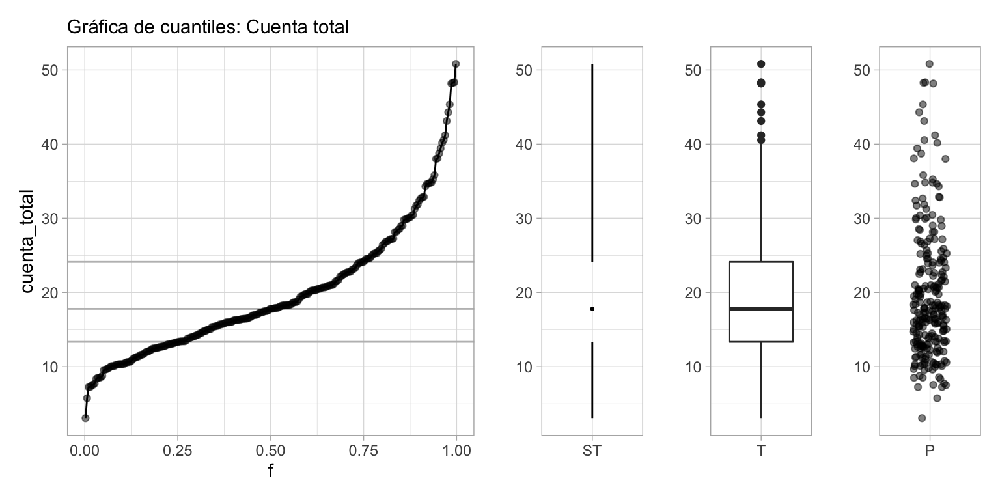
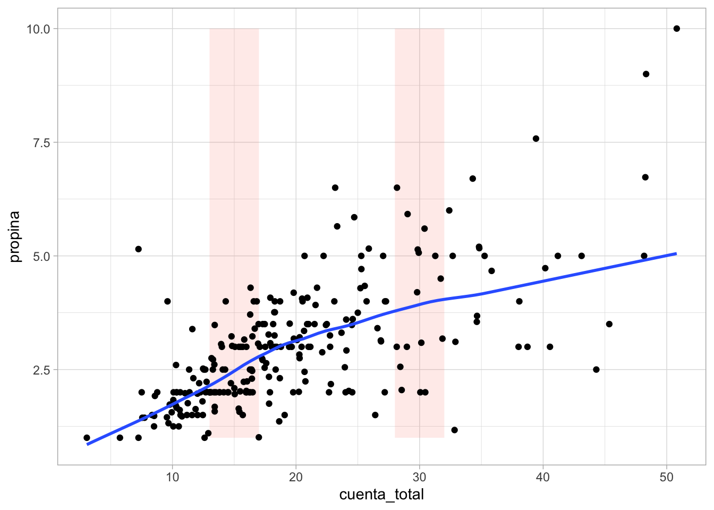
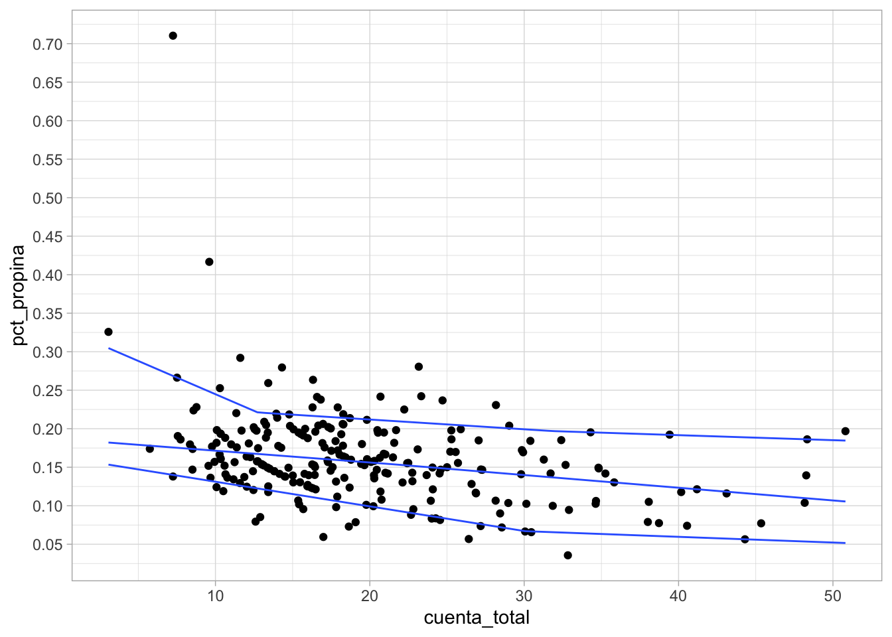

library(tidyverse)
library(patchwork)
library(kableExtra)
# usamos los datos tips del paquete reshape2
propinas <- read_csv("./datos/propinas.csv")1 Datos numéricos
En esta sección mostraremos cómo hacer distintos tipos de resúmenes para mediciones numéricas. Igual que en la sección anterior, consideraremos también el uso de estas descripciones para comparar distintos grupos (o bonches de datos, como les llamaba Tukey), aplicando repetidamente los mismos resúmenes a lo largo de esos distintos grupos.
1.1 Cuantiles o percentiles de una variable
Empezamos explicando algunas ideas que no serán útiles más adelante.
Por ejemplo, los siguientes datos fueron registrados en un restaurante durante cuatro días consecutivos:
Y vemos una muestra
slice_sample(propinas, n = 10) # A tibble: 10 × 6
cuenta_total propina fumador dia momento num_personas
<dbl> <dbl> <chr> <chr> <chr> <dbl>
1 16.4 2.3 No Jue Comida 2
2 13.0 2 No Jue Comida 2
3 19.4 3 Si Jue Comida 2
4 13 2 Si Jue Comida 2
5 32.8 1.17 Si Sab Cena 2
6 14.5 2 No Jue Comida 2
7 13.4 1.68 No Jue Comida 2
8 17.0 1.01 No Dom Cena 2
9 38.0 3 Si Sab Cena 4
10 12.9 1.1 Si Sab Cena 2Aquí la unidad de observación es una cuenta particular. Tenemos tres mediciones numéricas de cada cuenta: cúanto fue la cuenta total, la propina, y el número de personas asociadas a la cuenta. Los datos están separados según se fumó o no en la mesa, y temporalmente en dos partes: el día (Jueves, Viernes, Sábado o Domingo), cada uno separado por Cena y Comida.
El primer tipo de comparaciones que nos interesa hacer es para una medición numérica es: ¿Varían mucho o poco los datos? ¿Cuáles son valores típicos o centrales? ¿Existen valores muy extremos alejados de valores típicos?
Supongamos entonces que consideramos simplemente la variable de cuenta_total. Podemos comenzar por ordenar los datos, y ver cuáles datos están en los extremos y cuáles están en los lugares centrales:
propinas <- propinas |>
mutate(orden_cuenta = rank(cuenta_total, ties.method = "first"),
f = (orden_cuenta - 0.5) / n())
cuenta <- propinas |>
select(orden_cuenta, f, cuenta_total) |>
arrange(f)
bind_rows(head(cuenta), tail(cuenta)) |> kable() |>
kable_paper()| orden_cuenta | f | cuenta_total |
|---|---|---|
| 1 | 0.0020492 | 3.07 |
| 2 | 0.0061475 | 5.75 |
| 3 | 0.0102459 | 7.25 |
| 4 | 0.0143443 | 7.25 |
| 5 | 0.0184426 | 7.51 |
| 6 | 0.0225410 | 7.56 |
| 239 | 0.9774590 | 44.30 |
| 240 | 0.9815574 | 45.35 |
| 241 | 0.9856557 | 48.17 |
| 242 | 0.9897541 | 48.27 |
| 243 | 0.9938525 | 48.33 |
| 244 | 0.9979508 | 50.81 |
y graficamos los datos en orden, interpolando valores consecutivos.
A esta función le llamamos la función de cuantiles para la variable cuenta total. Nos sirve para comparar directamente los distintos valores que observamos los datos según el orden que ocupan.
Cuantiles de datos numéricos
El cuantil \(f\) de un bonche de datos numéricos es el valor \(q(f)\), en la escala de medición de nuestros datos, tal que aproximadamente una fracción \(f\) de los datos está por abajo de \(q(f)\).
- Al cuantil \(f=0.5\) le llamamos la mediana.
- A los cuantiles \(f=0.25\) y \(f=0.75\) les llamamos cuantiles inferior y superior.
Dispersión y valores centrales
- El rango de datos va de unos 3 dólares hasta 50 dólares
- Los valores centrales (del cuantil 0.25 al 0.75, por ejemplo), están entre unos 13 y 25 dólares
- Podemos usar el cuantil 0.5 (mediana) para dar un valor central de esta distribución, que está alrededor de 18 dólares.
Y podemos dar resúmenes más refinados si es necesario
- El cuantil 0.95 es de unos 35 dólares - sólo 5% de las cuentas son de más de 35 dólares
- El cuantil 0.05 es de unos 8 dólares - sólo 5% de las cuentas son de 8 dólares o menos.
Finalmente, la forma de la gráfica se interpreta usando su pendientes, haciendo comparaciones de diferentes partes de la gráfica:
Entre los cuantiles 0.2 y 0.5 es donde existe mayor densidad de datos: la pendiente es baja, lo que significa que al avanzar en los cuantiles, los valores observados no cambian mucho.
Cuando la pendiente es alta, quiere decir que los datos tienen más dispersión local o están más separados.
Y podemos considerar qué sucede en las colas de la distribucion:
- La distribución de valores tiene asimetría: el 10% de las cuentas más altas tiene considerablemente más dispersión que el 10% de las cuentas más bajas. A veces decimos que la cola de la derecha es más larga que la cola de la izquierda
En algunos casos, es más natural hacer un histograma, donde dividimos el rango de la variable en cubetas o intervalos (en este caso de igual longitud), y graficamos cuántos datos caen en cada cubeta:
Es una gráfica más popular, pero perdemos cierto nivel de detalle, y distintas particiones resaltan distintos aspectos de los datos.
Finalmente, una gráfica más compacta que resume la gráfica de cuantiles o el histograma es el diagrama de caja y brazos. Mostramos dos versiones, la clásica de Tukey (T) y otra versión menos común de Spear/Tufte (ST):
library(ggthemes)
cuartiles <- quantile(cuenta$cuenta_total)
cuartiles 0% 25% 50% 75% 100%
3.0700 13.3475 17.7950 24.1275 50.8100 g_1 <- ggplot(cuenta, aes(x = f, y = cuenta_total)) +
labs(subtitle = "Gráfica de cuantiles: Cuenta total") +
geom_hline(yintercept = cuartiles[2], colour = "gray") +
geom_hline(yintercept = cuartiles[3], colour = "gray") +
geom_hline(yintercept = cuartiles[4], colour = "gray") +
geom_point(alpha = 0.5) + geom_line()
g_2 <- ggplot(cuenta, aes(x = factor("ST", levels =c("ST")), y = cuenta_total)) +
geom_tufteboxplot() +
labs(subtitle = " ") + xlab("") + ylab("")
g_3 <- ggplot(cuenta, aes(x = factor("T"), y = cuenta_total)) + geom_boxplot() +
labs(subtitle = " ") + xlab("") + ylab("")
g_4 <- ggplot(cuenta, aes(x = factor("P"), y = cuenta_total)) + geom_jitter(height = 0, width =0.2, alpha = 0.5) +
labs(subtitle = " ") + xlab("") + ylab("")
g_1 + g_2 + g_3 + g_4 +
plot_layout(widths = c(8, 2, 2, 2))
Nota: Hay varias maneras de definir los cuantiles. Si tenemos \(n\) datos, podríamos poner \(q(4/n)\) como el cuarto dato (ordenando del más chico al más grande), y así sucesivamente. Esto implica por ejemplo que \(q(1)\) está definido como el valor más grande de los datos, y esto no es tan coveniente cuando trabajamos con modelos de probabilidad. Por eso preferimos definir al \(k\)-ésimo dato como el cuantil \(q(\frac{k - 0.5}{n})\). Para las gráficas que estamos haciendo por el momento esto no es muy importante.
1.2 Media y desviación estándar
Otras medidas más comunes de localización y dispersión para conjuntos de datos son media y desviación estándar muestral.
La media de un conjunto de datos \(x_1,\ldots, x_n\) es
\[\bar{x} = \frac{1}{n}\sum x_i\]
y la desviación estándar es
\[\hat{\sigma} =\sqrt{\frac{1}{n}\sum (x_i - \bar{x})^2}\]
En general, no son muy apropiadas para iniciar el análisis exploratorio, pues:
- Son medidas más difíciles de interpretar y explicar que los cuantiles. En este sentido, son medidas especializadas. Como ejercicio, intenta explicar intuitivamente qué es la media. Después prueba con la desviación estándar.
- No son resistentes a valores atípicos o erróneos. Su falta de resistencia los vuelve poco útiles en las primeras etapas de limpieza y descripción.
Sin embargo,
- La media y desviación estándar son computacionalmente convenientes, y para el trabajo de modelado, por ejemplo, tienen ventajas claras (cuando se cumplen supuestos). Por lo tanto regresaremos a estas medidas una vez que estudiemos modelos de probabilidad básicos.
- Muchas veces, ya sea por tradición, o por razones específicas, conviene usar estas medidas conocidas (o alguna variación). Por ejemplo cuando estamos estimando cantidades como totales, por ejemplo.
1.3 Comparando grupos con variables numéricas
Ejemplo: precios de casas
Consideramos datos de precios de ventas de la ciudad de Ames, Iowa. Nos interesa entender la variación del precio de las casas.
Calculamos primeros unos cuantiles de los precios de las casas:
quantile(casas |> pull(precio_miles)) 0% 25% 50% 75% 100%
37.9 132.0 165.0 215.0 755.0 Una primera comparación que podemos hacer es considerar las distintas zonas de la ciudad. Podemos usar diagramas de caja y brazos para comparar precios en distintas zonas de la ciudad:
ggplot(casas, aes(x = nombre_zona, y = precio_miles)) + geom_boxplot() + coord_flip()Nótese que de cada zona, los datos tienen una cola derecha más larga que la izquierda, e incluso hay valores extremos en la cola derecha que exceden el rango de variación usual. Una razón por la que puede suceder esto es que haya características particulares que agregan valor considerable a una casa, por ejemplo, el tamaño, una alberca, etc.
En primer lugar, podemos considerar el área de las casas. En lugar de graficar el precio, graficamos el precio por metro cuadrado, por ejemplo:
ggplot(casas, aes(x = nombre_zona, y = precio_m2)) + geom_boxplot() + coord_flip()Nótese ahora que la variación alrededor de la media es mucho más simétrica, y ya no vemos tantos datos extremos. Aún más, la variación dentro de cada zona parece ser similar, y podríamos describir restos datos de la siguiente forma:
Cuantificamos la variación que observamos de zona a zona y la variación que hay dentro de zonas. La variación que vemos entre las medianas de la zona es:
casas |> group_by(nombre_zona) |>
summarise(mediana_zona = median(precio_m2)) |>
pull(mediana_zona) |> quantile() |> round() 0% 25% 50% 75% 100%
963 1219 1298 1420 1725 Y las variaciones con respecto a las medianas dentro de cada zona, agrupadas, se resume como:
quantile(casas |> group_by(nombre_zona) |>
mutate(residual = precio_m2 - median(precio_m2)) |>
pull(residual)) |> round() 0% 25% 50% 75% 100%
-765 -166 0 172 1314 Nótese que este último paso tiene sentido pues la variación dentro de las zonas, en términos de precio por metro cuadrado, es similar. Esto no lo podríamos hacer de manera efectiva si hubiéramos usado el precio de las casas sin ajustar por su tamaño.
Y vemos que la mayor parte de la variación del precio por metro cuadrado ocurre dentro de cada zona, una vez que controlamos por el tamaño de las casas. La variación dentro de cada zona es aproximadamente simétrica, aunque la cola derecha es ligeramente más larga con algunos valores extremos.
Podemos seguir con otro indicador importante: la calificación de calidad de los terminados de las casas. Como primer intento podríamos hacer:
Lo que indica que las calificaciones de calidad están distribuidas de manera muy distinta a lo largo de las zonas, y que probablemente no va ser simple desentrañar qué variación del precio se debe a la zona y cuál se debe a la calidad.
1.4 Distribuciones sesgadas y atípicos
En algunos casos tenemos que trabajar con mediciones que tienen una cola (usualmente la derecha) mucho más larga que la otra. Veamos cuáles son consecuencias típicas.
Consideremos por ejemplos una muestra de los datos de ENIGH 2018
enigh <- read_csv("./datos/enigh-ejemplo.csv")Y los deciles de ingreso son
enigh <- mutate(enigh, ingreso_mensual_miles = INGTOT / 3000)
enigh |>
summarise(
f = seq(0, 1, 0.1),
cuantiles_ingreso = quantile(ingreso_mensual_miles, probs = seq(0, 1, 0.1))) |>
kable(digits = 2) |>
kable_paper(full_width = FALSE)| f | cuantiles_ingreso |
|---|---|
| 0.0 | 0.81 |
| 0.1 | 2.58 |
| 0.2 | 3.86 |
| 0.3 | 5.53 |
| 0.4 | 6.75 |
| 0.5 | 8.27 |
| 0.6 | 9.99 |
| 0.7 | 12.95 |
| 0.8 | 16.20 |
| 0.9 | 22.18 |
| 1.0 | 317.53 |
donde podemos ver cómo cuando nos movemos a deciles más altos, la dispersión aumenta. Existen algunos valores muy grandes. Un histograma no funciona muy bien con estos datos.
ggplot(enigh, aes(x = ingreso_mensual_miles)) + geom_histogram()`stat_bin()` using `bins = 30`. Pick better value with `binwidth`.
Si filtramos los valores muy grandes, de todas formas encontramos una forma similar con una cola larga a la derecha:
ggplot(enigh |> filter(ingreso_mensual_miles < 90),
aes(x = ingreso_mensual_miles)) + geom_histogram()`stat_bin()` using `bins = 30`. Pick better value with `binwidth`.Nótese que la media de estos datos no es un resúmen muy útil, porque es difícil de interpretar. Por los valores grandes, la media es considerablemente más alta que la mediana:
enigh |>
summarise(
media = mean(ingreso_mensual_miles),
mediana = quantile(ingreso_mensual_miles, probs = 0.5)) |>
kable(digits = 2)| media | mediana |
|---|---|
| 12.04 | 8.27 |
Esta es otra razón para incluir información de cuantiles en la etapa descriptiva. Por ejemplo, podríamos resumir:
enigh |>
summarise(
f = c("min", 0.05, "0.50", 0.95, "max"),
cuantiles_ingreso = quantile(ingreso_mensual_miles, probs = c(0, 0.05, 0.5, 0.95, 1))) |>
kable(digits = 2) |>
kable_paper(full_width = FALSE)| f | cuantiles_ingreso |
|---|---|
| min | 0.81 |
| 0.05 | 1.92 |
| 0.50 | 8.27 |
| 0.95 | 32.24 |
| max | 317.53 |
Para obtener una gŕafica más informativa, podemos utilizar una escala logarítmica. El logaritmo de los ingresos es más fácil de describir y veremos también más fácil de trabajar.
ggplot(enigh,
aes(x = ingreso_mensual_miles)) +
geom_histogram(binwidth = 0.12) +
scale_x_log10(breaks = c(1, 2, 4, 8, 16, 32, 64, 128, 256)) +
xlab("Ingreso mensual (miles)")1.5 Factor y respuesta numéricos
En las secciones anteriores vimos cómo describir “bonches” de datos numéricos y categóricos. Adicionalmente, vimos cómo usar esas técnicas para comparar las descripciones a lo largo de varios subconjuntos de los datos.
En estos casos, muchas veces llamamos factor a la variables que forma los grupos, y respuesta a la variable que estamos comparando. Por ejemplo, en el caso de tomadores de té comparamos uso de complementos (respuesta) a lo largo de consumidores de distintos tipos de té (factor) En el caso de los precios de las casas comparamos el precio de las casas (respuesta) dependiendo del vecindario (factor) dónde se encuentran.
Cuando tenemos una factor numérico y una respuesta numérica podemos comenzar haciendo diagramas de dispersión. Por ejemplo,
Ejemplo: cuenta total y propina
library(tidyverse)
library(patchwork)
library(kableExtra)
# usamos los datos tips del paquete reshape2
propinas <- read_csv("./datos/propinas.csv")Podríamos comenzar haciendo:
ggplot(propinas, aes(x = cuenta_total, y = propina)) +
geom_point() + geom_rug(colour = "salmon", alpha = 0.5)Ahora queremos comparar la distribución de propina (respuesta) para distintos niveles del factor (cuenta_total). Por ejemplo, ¿cómo se compara propina cuando la cuenta es de 15 dólares vs 30 dólares?
ggplot(propinas, aes(x = cuenta_total, y = propina)) +
geom_vline(xintercept = c(15, 30), colour = "red") +
geom_point() Vemos que los datos de propinas alrededor de 30 dólares están centrados en valores más grandes que en el nivel de 15 dólares, y también que hay más dispersión en el nivel de 30 dólares. Sin embargo, vemos que tenemos un problema: existen realmente muy pocos datos que tengan exactamente 15 o 30 dólares de cuenta. La estrategia es entonces considerar qué sucede cuando la cuenta está alrededor de 15 o alrededor de 30 dólares, donde alrededor depende del problema particular y de cuántos datos tenemos:
ggplot(propinas, aes(x = cuenta_total, y = propina)) +
geom_ribbon(aes(xmin = 13, xmax = 17), fill = "salmon", alpha = 0.5) +
geom_ribbon(aes(xmin = 28, xmax = 32), fill = "salmon", alpha = 0.5) +
geom_point() Considerando estos grupos de datos, podemos describir de las siguiente forma, por ejemplo:
propinas |>
mutate(grupo = cut(cuenta_total, breaks = c(0, 13, 17, 28, 32))) |>
filter(grupo %in% c("(13,17]", "(28,32]")) |>
group_by(grupo) |>
summarise(
n = n(),
q10 = quantile(propina, 0.10),
mediana = quantile(propina, 0.5),
q90 = quantile(propina, 0.90),
rango_cuartiles = quantile(propina, 0.75) - quantile(propina, 0.25)) |>
kable(digits = 2) |>
kable_paper(full_width = FALSE)| grupo | n | q10 | mediana | q90 | rango_cuartiles |
|---|---|---|---|---|---|
| (13,17] | 57 | 1.85 | 2.47 | 3.49 | 1.0 |
| (28,32] | 16 | 2.02 | 3.69 | 5.76 | 2.2 |
Conde confirmamos que el nivel general de propinas es más alto alrededor de cuentas de total 30 que de total 15, y la dispersión también es mayor. Podríamos hacer un diagrama de caja y brazos también.
1.6 Suavizadores locales
El enfoque del ejemplo anterior puede ayudar en algunos casos nuestra tarea descriptiva, pero quisiéramos tener un método más general y completo para entender cómo es una respuesta numérica cuando el factor es también numérico.
En este caso, podemos hacer por ejemplo medias o medianas locales. La idea general es, en términos de nuestro ejemplo de propinas:
- Queremos producir un resumen en un valor de cuenta total \(x\).
- Consideramos valores de propina asociados a cuentas totales en un intervalo \([x-e, x+e]\).
- Calculamos estadísticas resumen en este rango para la respuesta
- Usualmente también ponderamos más alto valores que están cerca de \(x\) y ponderamos menos valores más lejanos a \(x\)
Este tipo de suavizadores se llaman a veces suavizadores loess (ver (Cleveland 1993)).
Por ejemplo,
ggplot(propinas, aes(x = cuenta_total, y = propina)) +
geom_ribbon(aes(xmin = 13, xmax = 17), fill = "salmon", alpha = 0.15) +
geom_ribbon(aes(xmin = 28, xmax = 32), fill = "salmon", alpha = 0.15) +
geom_point() +
geom_smooth(method = "loess", span = 0.5,
method.args = list(family = "symmetric", degree = 1), se = FALSE) `geom_smooth()` using formula 'y ~ x'
# symmetric es un método robusto iterativo, que reduce el peso de atípicosEl parametro span controla el tamaño de la ventana de datos que se toma en cada punto. Nótese como alrededor de 15 y 30 los valores por donde pasa el suavizador son similares a las medianas que escribimos arriba.
Podemos ajustar en cada ventana tambien rectas de minimos cuadrados, y obtener un suavizador de tipo lineal. En la siguiente gráfica mostramos cómo funciona este suavizador para distintos tamaños de ventanas (span)

Tip
Los suavizadores loess tienen como fin mostrar alrededor de qué valor de distribuye la respuesta (eje vertical) para distintos valores del factor (eje horizontal). Se escoge span suficientemente baja de forma que mostremos patrones claros en los datos y casi no capturemos variación debida a los tamaños de muestra chicos.
En la animación anterior, un valor de span de 0.15 funciona aprpiadamente, y uno de 0.05 es demasiado bajo y uno de 1.0 es demasiado alto. Es importante explorar con el valor de span pues depende de cuántos datos tenemos y cómo es su dispersión.
1.7 Regresión cuantílica
Podemos también mostrar estimaciones de medianas y cuantiles de la siguiente forma (nota: es necesario escoger lambda con cuidado, cuanto más alto sea lambda más suave es la curva obtenida):
ggplot(propinas, aes(x = cuenta_total, y = propina)) +
geom_ribbon(aes(xmin = 13, xmax = 17), fill = "salmon", alpha = 0.15) +
geom_ribbon(aes(xmin = 28, xmax = 32), fill = "salmon", alpha = 0.15) +
geom_point() +
geom_quantile(method = "rqss", lambda = 15, quantiles = c(0.10, 0.5, 0.90)) +
scale_y_continuous(breaks = seq(0, 10, 1)) +
xlab("Propina (dólares)")Smoothing formula not specified. Using: y ~ qss(x, lambda = 15)Finalmente, entendimiento de los datos no permite también hacer gráficas más útiles. En este ejemplo particular podría por ejemplo calcular el porcentaje de la propina sobre la cuenta total:
propinas <- propinas |> mutate(propinas, pct_propina = propina / cuenta_total)
propinas_2 <- propinas |>
filter(pct_propina < 0.70) |>
mutate(grupo = cut(num_personas, c(1, 3, 10), include.lowest = TRUE))
quantile(propinas_2 |> pull(pct_propina)) |> round(2) 0% 25% 50% 75% 100%
0.04 0.13 0.15 0.19 0.42 ggplot(propinas, aes(x = cuenta_total, y = pct_propina)) +
geom_point() +
scale_y_continuous(breaks = seq(0,1, 0.05)) +
geom_quantile(method = "rqss",
lambda = 20, quantiles = c(0.10, 0.5, 0.90)) 
Observa que la descripción es más simple que si usamos propina cruda y cuenta.
- Para cuentas chicas, el porcentaje de propina puede ser muy alto (aún cuando la propina en sí no es tan grande):
filter(propinas, pct_propina > 0.30) |>
arrange(desc(pct_propina)) |>
kable(digits = 2) |>
kable_paper(full_width = FALSE)| cuenta_total | propina | fumador | dia | momento | num_personas | pct_propina |
|---|---|---|---|---|---|---|
| 7.25 | 5.15 | Si | Dom | Cena | 2 | 0.71 |
| 9.60 | 4.00 | Si | Dom | Cena | 2 | 0.42 |
| 3.07 | 1.00 | Si | Sab | Cena | 1 | 0.33 |
Para cuentas relativamente chicas (10 dólares, el porcentaje de propina está por encima de 15%). Este porcentaje tiende a reducirse a valores 10% y 15% para cuentas más grandes.
Existe variación considerable alrededor de estos valores centrales. El rango entre los deciles extremos es aproximadamente de 5 puntos porcentuales.
O de manera más resumida:
- La mediana de propinas está ligeramente por arriba de 15% para cuantas relativamente chicas. Esta mediana baja hasta alrededor de 10%-15% para cuentas más grandes (más de 40 dólares)
- La mitad de las propinas no varía más de unos 5 puntos porcentuales alrededor de estas medianas.
- Existen propinas atípicas: algunas muy bajas de 1 dólar, muy por debajo del 15%, y ocasionalmente algunas muy altas en porcentaje. Estas últimas ocurren ocasinalmente especialmente en cuentas chicas (por ejemplo, una propina de 1 dólar en una cuenta de 3 dólares).
Si dividimos por tamaño de grupo, vemos información adicional: la reducción proporcional de propina parece no ocurrir en grupos más grandes (más personas en la mesa), donde la mediana de propinas se mantiene en 15%.
propinas <- propinas |> mutate(propinas, pct_propina = propina / cuenta_total)
propinas_2 <- propinas |>
filter(pct_propina < 0.70) |>
mutate(grupo = cut(num_personas, c(1, 3, 10), include.lowest = TRUE))
quantile(propinas_2 |> pull(pct_propina)) |> round(2) 0% 25% 50% 75% 100%
0.04 0.13 0.15 0.19 0.42 ggplot(propinas_2, aes(x = cuenta_total, y = pct_propina)) +
geom_point() +
scale_y_continuous(breaks = seq(0,1, 0.05)) +
geom_quantile(method = "rqss",
lambda = 30, quantiles = c(0.10, 0.5, 0.90)) +
facet_wrap(~ grupo) - Es razonable cortar por número de grupo, pues esta variable afecta tanto a la cuenta total (grupos mayores tienden a gastar más) como al porcentaje de propina (grupos mayores tienen que ponerse de acuerdo con la propina, la propina se divide en más personas, pueden tener más problemas con el servicio, etc).
Este es otro ejemplo de una gráfica de este tipo (usando regresión cuantílica):
Cleveland, William S. 1993. Visualizing Data. Hobart Press.